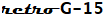

Bendix G-15 Emulator – Useful Links
This page presents a number of links to documents, source code, object code, and utilities for the G-15.
General Information
- Emulator Hosting Site
- Home page for the emulator hosting site (this site). Contains links to run the emulator, and access project resources and other related materials.
- Open-Source Project Site
- Source code, documentation, and other developer resources for the retro-g15 emulator project at GitHub.
- Project Wiki
- Documentation for using the retro-g15 emulator.
- Bendix G-15 Documents at bitsavers.org
- A collection of scanned copies of original Bendix manuals and other reference materials for the G-15 system.
- David Green's G-15 site
- Documents and discussion on the G-15 and its use in Western Australia, along with information about other early computers.
- Paul Pierce's G-15 site
- Documents and paper-tape image files from Paul Pierce's computer collection.
Miscellaneous
- Huskey on the G-15
- Lecture by Harry Huskey in 1982 on the design of the G-15 and its relationship to the Pilot ACE computer.
- Jim Horning's "The Way It Was" blog
- Memoirs of computing in the late 1950s and early 1960s, many involving the G-15 at the Pacific Union College Data Processing Lab (DPL) in Angwin, California. This link goes to the latest post (from 2009). Click on the "Archives" sidebar to access earlier posts.
- G-15 at Carnegie-Mellon
- Memoirs of the G-15 at Carnegie-Mellon University during the 1960s.
- G-15 on Wikipedia
- Wikipedia page on the G-15.
Revised
2022-05-07